ADMINISTRACIÓN 2
CRIMINOLOGÍA Y CRIMINALÍSTICA 80
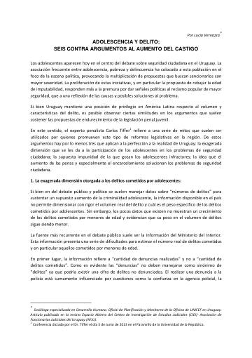
Adolescencia y delito: seis contra argumentos al aumento del castigoAdolescencia y delito: seis contra argumentos al aumento del castigo
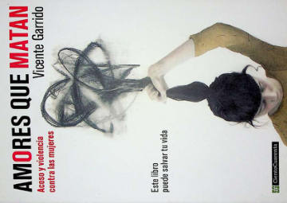
Amores que matanAmores que matan
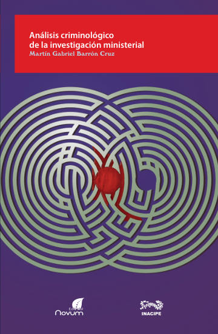
Análisis criminológico de la investigación ministerialAnálisis criminológico de la investigación ministerial
Análisis de los principales fluidos corporales en criminalística
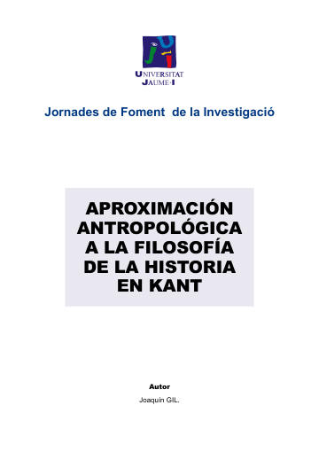
Aproximación antropológica a la filosofía de la historiaAproximación antropológica a la filosofía de la historia
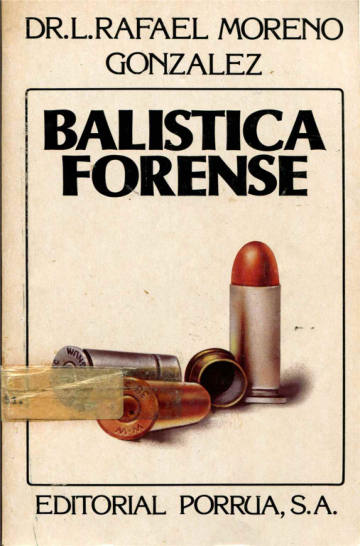
Balística forenseBalística forense
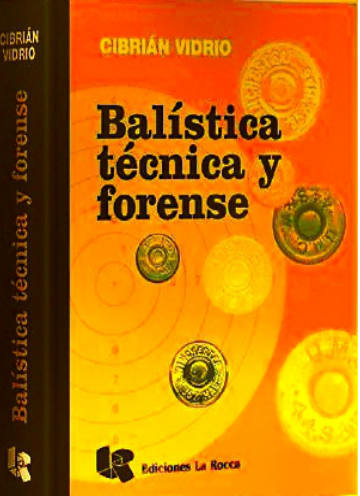
Balística técnica y forenseBalística técnica y forense
Balística y pericia
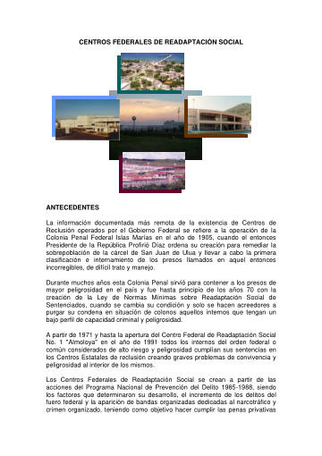
Centros federales de readaptación socialCentros federales de readaptación social
Color Atlas of Forensic Pathology
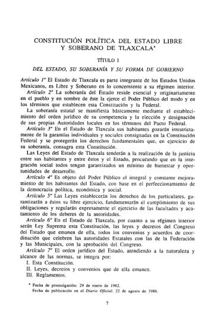
Constitución Política del Estado Libre y Soberano de TlaxcalaConstitución Política del Estado Libre y Soberano de Tlaxcala
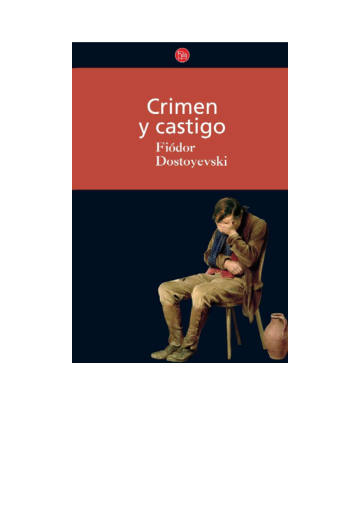
Crimen y castigoCrimen y castigo
Criminalística I
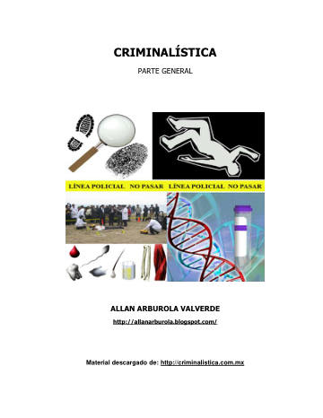
Criminalística. Parte generalCriminalística. Parte general
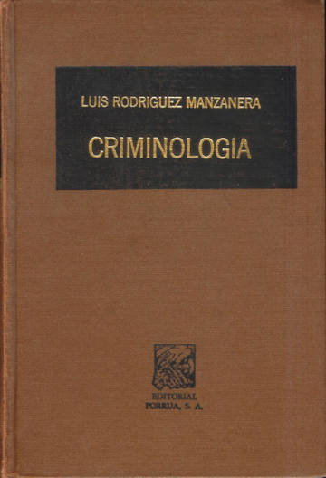
CriminologíaCriminología
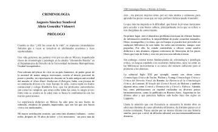
Criminología (Sánchez Sandoval y González Vidaurri)Criminología (Sánchez Sandoval y González Vidaurri)
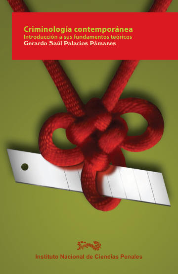
Criminología contemporáneaCriminología contemporánea
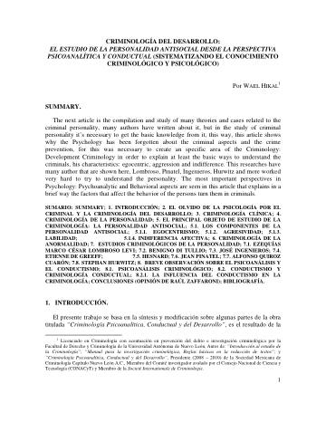
Criminología del desarrolloCriminología del desarrollo
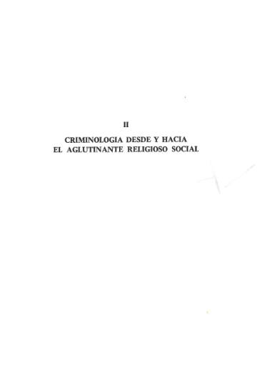
Criminología desde y hacia el aglutinante religioso socialCriminología desde y hacia el aglutinante religioso social
Criminología Psicoanalítica
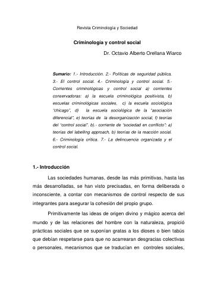
Criminología y control socialCriminología y control social
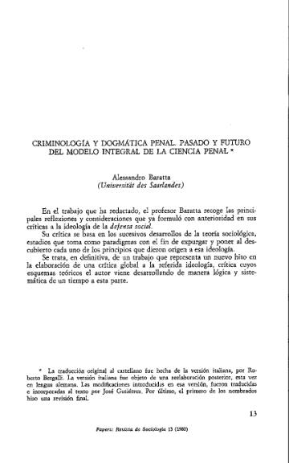
Criminología y dogmática penal: pasado y futuro del modelo integral de la ciencia penalCriminología y dogmática penal: pasado y futuro del modelo integral de la ciencia penal
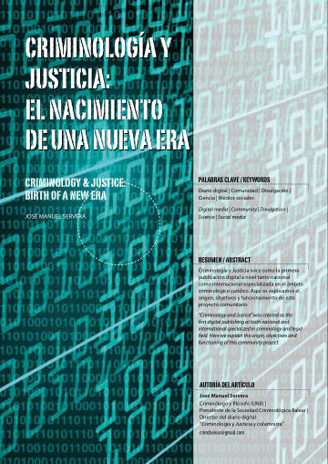
Criminología y justicia: el nacimiento de una nueva eraCriminología y justicia: el nacimiento de una nueva era
Criminología y sistema penal
Criminología, teorías y pensamientos
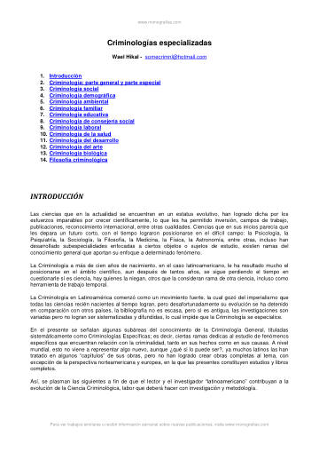
Criminologías especializadasCriminologías especializadas
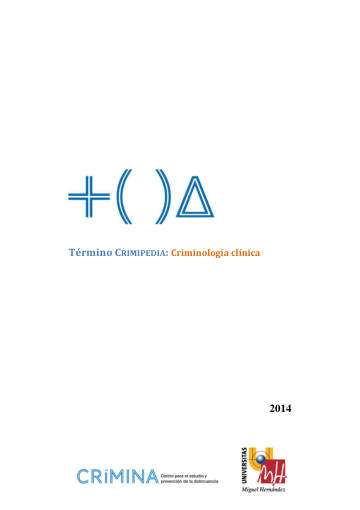
Crimipedia: Criminología clínicaCrimipedia: Criminología clínica
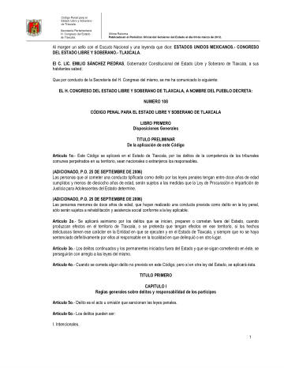
Código Penal para el Estado Libre y Soberano de TlaxcalaCódigo Penal para el Estado Libre y Soberano de Tlaxcala
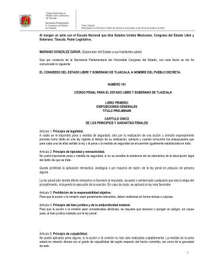
Código Penal para el Estado Libre y Soberano de TlaxcalaCódigo Penal para el Estado Libre y Soberano de Tlaxcala
Cómo detectar mentiras
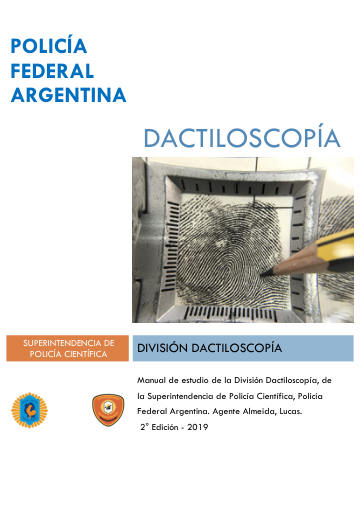
DactiloscopíaDactiloscopía
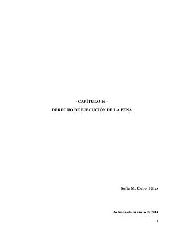
Derecho de ejecución de la penaDerecho de ejecución de la pena
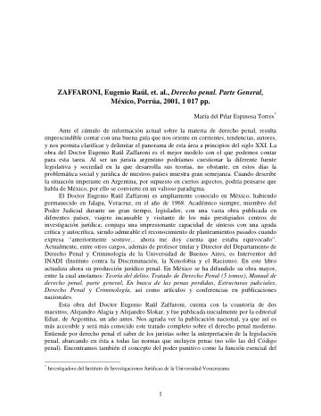
Derecho penal. Parte general (Zaffaroni), reseñaDerecho penal. Parte general (Zaffaroni), reseña
 Derecho penal. Parte general (Zaffaroni), reseña
Derecho penal. Parte general (Zaffaroni), reseñaDerecho penal. Parte general (Zaffaroni), reseña
Derechos de autor en Internet
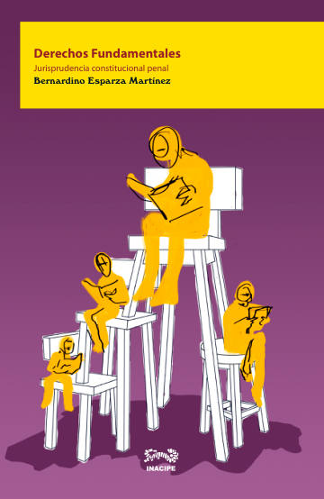
Derechos fundamentales. Jurisprudencia constitucional penalDerechos fundamentales. Jurisprudencia constitucional penal
Derechos humanos en la Constitución I
Derechos humanos en la Constitución II
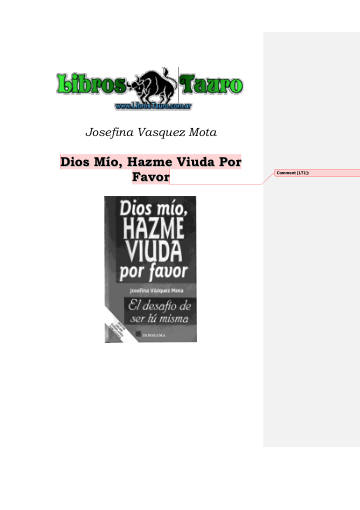
Dios Mío, Hazme Viuda Por FavorDios Mío, Hazme Viuda Por Favor
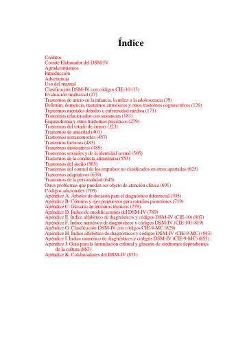
DSM-IV: Manual diagnóstico y estadístico de los trastornos mentalesDSM-IV: Manual diagnóstico y estadístico de los trastornos mentales
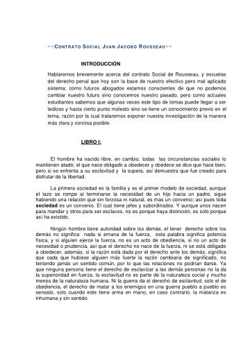
El contrato social de Juan Jacobo RousseauEl contrato social de Juan Jacobo Rousseau
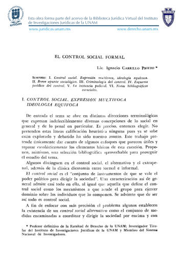
El control social formalEl control social formal
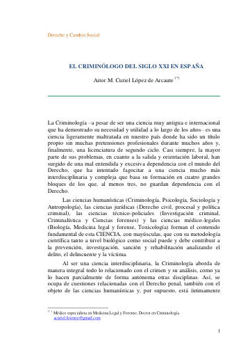
El criminólogo del siglo XXI en EspañaEl criminólogo del siglo XXI en España
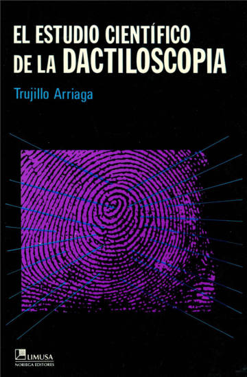
El estudio científico de la dactiloscopiaEl estudio científico de la dactiloscopia
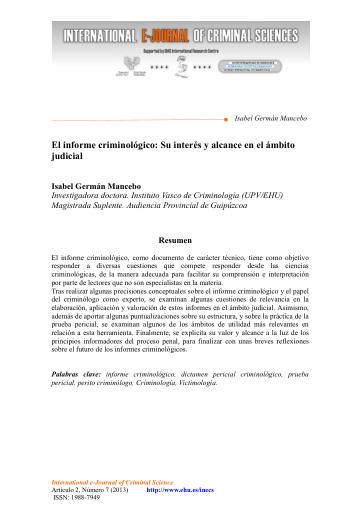
El informe criminológico: su interés y alcance en el ámbito judicialEl informe criminológico: su interés y alcance en el ámbito judicial
El Manifiesto Comunista
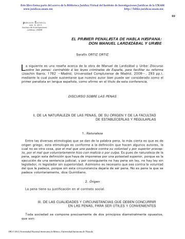
El primer penalista de habla hispana: Don Manuel Lardizábal y UribeEl primer penalista de habla hispana: Don Manuel Lardizábal y Uribe
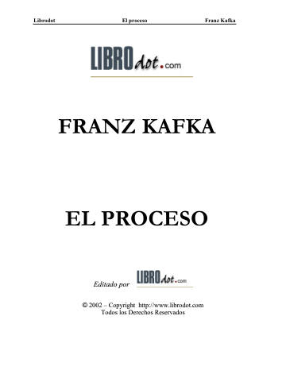
El procesoEl proceso
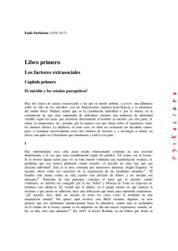
El suicidioEl suicidio
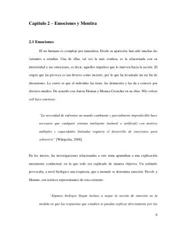
Emociones y mentiraEmociones y mentira
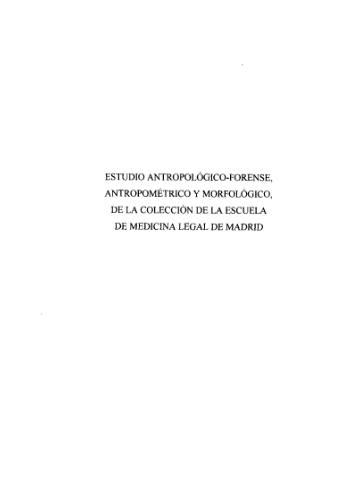
Estudio antropológico-forense, antropométrico y morfológico de la colección de la Escuela de Medicina Legal de MadridEstudio antropológico-forense, antropométrico y morfológico de la colección de la Escuela de Medicina Legal de Madrid
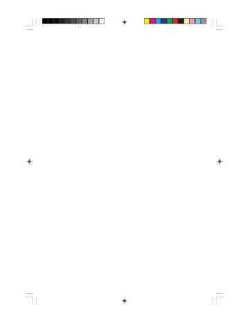
Estudios sobre criminología y derecho penalEstudios sobre criminología y derecho penal
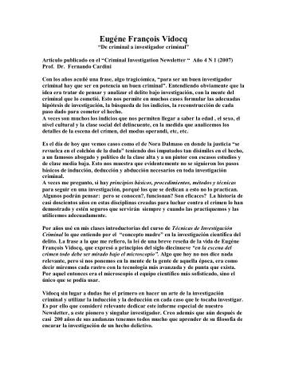
Eugène François Vidocq: de criminal a investigador criminalEugène François Vidocq: de criminal a investigador criminal
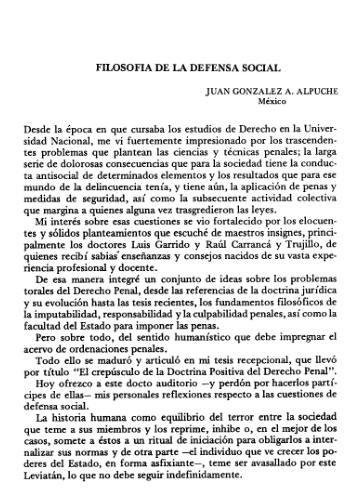
Filosofía de la defensa socialFilosofía de la defensa social
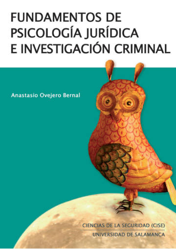
Fundamentos de psicología jurídica e investigación criminalFundamentos de psicología jurídica e investigación criminal
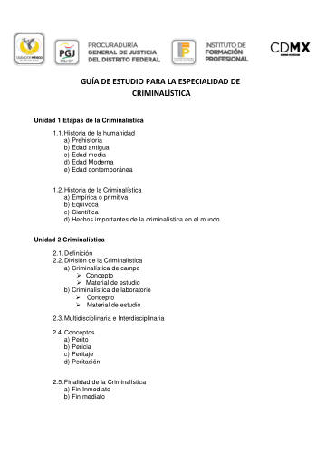
Guía de estudio para la especialidad de criminalísticaGuía de estudio para la especialidad de criminalística
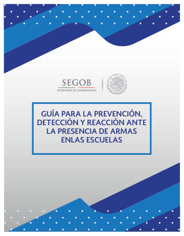
Guía de prevención de armas en las escuelasGuía de prevención de armas en las escuelas
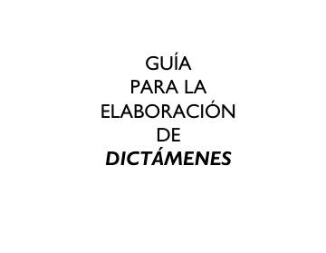
Guía para la elaboración de dictámenesGuía para la elaboración de dictámenes
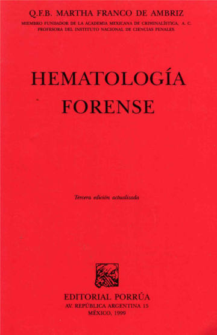
Hematología forenseHematología forense
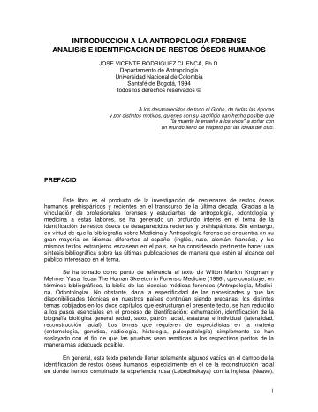
Introducción a la antropología forenseIntroducción a la antropología forense
Introducción a la criminología y al derecho penal
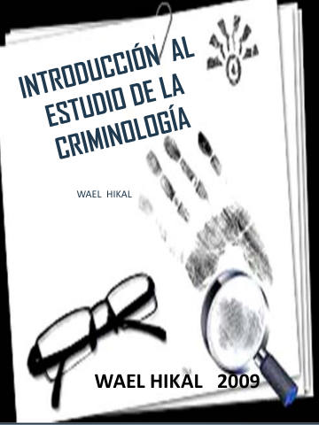
Introducción al estudio de la criminologíaIntroducción al estudio de la criminología
Introducción Criminología clínica
Investigación criminalística en hechos de tránsito terrestre
La antropología forense en la identificación humana
La criminalística y la criminología, auxiliares de la justicia
La criminología forense y el informe criminológico
La división del trabajo social (vol. 1)
La ejecución de medidas aplicadas a los adolescentes infractores
La evolución de la política criminal, el derecho penal y el proceso penal
La fotografía forense en la peritación legal
La función de la pena
La Nueva Criminología. Contribución a una teoría social de la conducta desviada
La policía en el nuevo sistema de justicia penal
La racionalidad en las teorías criminológicas contemporáneas
La Teoría de la Justicia de John Rawls
Latigazo cervical y colisiones a baja velocidad
Los derechos fundamentales en la Constitución de 1917
Ludwig Feuerbach y el fin de la filosofía clásica alemana
POLICÍA 3: Investigación de delitos
EDUCACIÓN 19
Atlas de historia universal
Compendio de didáctica general
Donde no hay asesor: manual del tesista autodidacta
El lenguaje
El saber didáctico
Introducción a la filosofía de la educación: análisis y lecturas clásicas
Introducción a la pragmática
Introducción a la pragmática
Introducción a la semántica
Investigación de mercados, 10ma Edición
La ciencia, su método y su filosofía
La semiótica como teoría lingüística
La semántica
Los aires de familia de Carlos Monsiváis
Los indios de México
Los inicios de la ciencia occidental
Metodología de la investigación lingüística (reseña)
Teorías psicológicas de la educación
Valores y educación
ENFERMERÍA 105
50 cosas que hay que saber sobre genética
After
Ahora y siempre (Landon 2)
Almas perdidas
Amor infinito
Anatomía y fisiología humana
Antes de ella
Aplicación del láser de baja potencia en dermatología
Aprenda ECG en un día
Aspectos destacados de las Guías de la AHA 2010 para RCP y ACE
Aspectos destacados de las Guías de la AHA 2020 para RCP y ACE
Biocinemática del accidente de tráfico
Biología celular y molecular
Biología molecular e ingeniería genética
Biología molecular. Fundamentos y aplicaciones en las ciencias de la salud
Bioética clínica: Una breve introducción
Bioética: teorías y principios
Cardiología pediátrica práctica
Career Paths: Nursing
Clasificación de Intervenciones de Enfermería (NIC), 5ª ed.
Clasificación de Intervenciones de Enfermería (NIC), 6ª ed.
Clasificación de Resultados de Enfermería (NOC)
Criminología dinámica
Cuadernillo de enfermería
Cuadernos técnicos Nº 1: Cuerdas de seguridad
Cuidados neonatales (Sola), tomo 1
Curso rápido de terminología médica
Diagnósticos enfermeros NANDA 2009–2011
Diagnósticos enfermeros NANDA 2015–2017
Diagnósticos enfermeros NANDA 2018–2020
Diagnósticos enfermeros NANDA 2021–2023
Diccionario de anatomía e histología
Diccionario Médico Conciso y de Bolsillo
Electrocardiografía y arritmias
En mil pedazos
Enfermería fundamental (Desgloses CTO)
Enfermería maternal y del recién nacido (5a. ed.)
Enfermería. Farmacología
European consensus guidelines on the management of neonatal respiratory distress syndrome*
Farmacología para enfermeras (2a. ed.)
Fichas de enfermería: cálculo de dosis y escalas clínicas
Fisiología humana (3a. ed.)
Fundamentos de enfermería. Conceptos, proceso y prácticas
Gaceta CONBIOÉTICA: Políticas públicas en bioética
Genética clínica
Genética molecular y citogenética humana
Guidelines on Paediatric Parenteral Nutrition
Guía de Actuación de Enfermería
Guía práctica de lesiones
Guía rápida de dosificación práctica en pediatría
Guías provisionales. Unidad de recién nacidos 2003
Hadeo: instrumental médico quirúrgico
Identificación del material quirúrgico
Individualized developmental care for high risk newborns in the NICU: A practice guideline
Instrumental básico para prácticas quirúrgicas en la guardia
Instrumental de otorrinolaringología
Instrumental quirúrgico
Introducción a la anatomía humana
Introducción a la genética humana
Introducción a la genética médica
La anatomía como ciencia
La historia clínica criminal
Lo esencial en célula y genética
Management of Hyperbilirubinemia in the Newborn Infant 35 or More Weeks of Gestation
Manejo inicial integral del paciente quemado
Manual AMIR Enfermería: Enfermería maternal (4a ed.)
Manual CTO de Enfermería: Enfermería fundamental
Manual de Anatomía Humana
Manual de neonatología
Manual de prescripción pediátrica
Manual de urgencias. Cirugía general
Manual de urgencias. Ginecológicas
Manual de urgencias. Médicas
Manual de urgencias. Pediátricas
Manual Harriet Lane de pediatría
Manual Washington de especialidades clínicas: Cardiología
Manual Washington de pediatría
Medicina forense
Modelos y teorías en enfermería
Neofax 2008
Neonatal Resuscitation: 2010 International Consensus
Netter. Cardiología
Pediadatos: tablas, fórmulas y valores normales en pediatría
Pediatría (Manual CTO)
Pediatría: diagnóstico y tratamiento
Pediatría: manual de bolsillo "Pa' la guardia"
Principios de anatomía y fisiología
Principios de anatomía y fisiología (Tortora y Derrickson)
Procedimientos técnicos en urgencias, medicina crítica y pacientes de riesgo
Protocolos diagnósticos y terapéuticos de neonatología en pediatría (AEP)
Protocolos para el manejo del paciente intoxicado
Reanimación Neonatal
Scores pronósticos y criterios diagnósticos en el paciente crítico
T-Books T-I: Manual básico de fisiología
The Diagnosis, Management, and Postnatal Prevention of Intraventricular
Tipos de pinzas, tijeras y separadores
Toxicología básica
Tratado de pediatría
Tratado de pediatría
Urgencias ortopédicas: extremidades
USMLE Step 2 CK Lecture Notes: Pediatrics
Valoración del daño corporal: pares craneales, médula espinal, sistema nervioso periférico
Vínculos de NOC y NIC a NANDA-I y diagnósticos médicos
Williams. Obstetricia (25a. ed.)
 Williams. Obstetricia (25a. ed.)
Williams. Obstetricia (25a. ed.)Williams. Obstetricia (25a. ed.)
ESTILISMO Y COSMETOLOGÍA 34
Cosmetología para estética y belleza
Cosmetología y patologías de la piel
 Cosmetología y patologías de la piel
Cosmetología y patologías de la pielCosmetología y patologías de la piel
Cosmetología: Resuelve el enigma
Cosmética natural
Código de ética y conducta del estilista profesional
Cómo combatir los signos de edad con el maquillaje
Cómo elaborar tus propios jabones de glicerina en casa
El arte del maquillaje paso a paso
Estudio de la imagen de la clienta y las condiciones de su cabello
Estudios de estabilidad de productos cosméticos
Fisiología cardiovascular
Guía de las plantas medicinales
Guía de recomendaciones higiénico sanitarias para salones de peluquería
Imagen personal en el entorno de trabajo
Insumos básicos para maquillar: organización del área de trabajo
Las enfermedades de la piel
Lavado y cambios de forma del cabello
Manual de peinados InStyler
Maquillaje de Día
Maquillaje de Noche y Fiesta
Maquillaje especial 15 Años
Maquillaje especial Novia
Maquillaje profesional
Maquillaje: estética personal decorativa
Módulo de peinado (HairDresser)
Músculos del cuerpo humano
Por una cosmética inteligente: aceites esenciales y vegetales
Prometheus Atlas de Anatomía
Taller de jabones y cosmética natural
Técnicas de corte de cabello según el efecto que quieras conseguir
Técnicas de Ojo Ahumado
Técnicas y estilos del corte de cabello
Ética del ejercicio profesional
FILOSOFÍA 12
Crítica de la razón pura
De la brevedad de la vida
De la ira
El mundo de Sofía
El príncipe
Ensayo sobre el gobierno civil
Fundamentación de la metafísica de las costumbres
La Ciudad De Dios
La Poética
Lisis
Platón en 90 minutos
Suma teológica
FISIOTERAPIA 16
Agentes físicos en rehabilitación
Agentes físicos terapéuticos
Anatomía con orientación clínica
Atlas de anatomía normal humana
Atlas fotográfico de anatomía del cuerpo humano
Ejercicios de Estimulación Temprana
El fisioterapeuta y las nuevas tecnologías. Fisioterapia e internet
Estimulación temprana (parte III)
Estimulación temprana: severas dificultades motrices (segunda parte)
Física general
Guía de fisioterapia: cuarentena COVID-19
Manual de estimulación temprana
Postura y movimiento del niño con parálisis cerebral
Principios de anatomía y fisiología (Tortora y Derrickson)
Prácticas de histología humana
Ross. Histología: texto y atlas (7ª ed.)
GESTIÓN DEPORTIVA 51
100 ejercicios y juegos de coordinación dinámica general
100 formas de animar grupos
1000 ejercicios y juegos de baloncesto
1060 ejercicios y juegos de natación
40 juegos para la expresión corporal
400 juegos y ejercicios de educación física de base
Ajedrez
Ajedrez para niños
Aprender a enseñar: el arte de entrenar
Baloncesto I
Baloncesto: ejercicios de entrenamiento
Bases teóricas del entrenamiento deportivo
Conceptos y métodos para el entrenamiento físico
Cuatro estaciones: 4 sesiones de juegos cooperativos
Cómo conocer a las personas por su lenguaje corporal
Cómo vencer el miedo al agua y aprender a nadar
Desafíos físicos cooperativos
Desarrollo de las destrezas motoras: juegos de psicomotricidad de 18 meses a 5 años
Dinámicas de integración grupal
Ejercicio terapéutico
Ejercicios técnico-tácticos con finalización
El entrenamiento en los deportes de equipo
Enciclopedia de educación física en la edad escolar
Entrenamiento combinado de fuerza y resistencia
Fisiología clínica del ejercicio
Fisiología del entrenamiento aeróbico
Guyton y Hall. Repaso en fisiología
Historia de la actividad física y el deporte
Historia de la Educación Física y el Deporte a Través de los Textos
Juegos cooperativos de ayer y de hoy
Juegos cooperativos y sin competición
Juegos cooperativos: ¡juguemos juntos!
La anatomía de las lesiones deportivas
La inclusión en la actividad física y deportiva
Ley General de Cultura Física y Deporte
Los juegos en la educación física de los 12 a los 14 años
Los juegos en la motricidad infantil de los 3 a los 6 años
Manual de 38 matrogimnasias educativas
Manual de capacitación Academia Beisbol. Fase 1
Manual de entrenamiento deportivo
Manual de medición en la educación física
Manual de teoría e historia de la educación física y el deporte contemporáneos
Mi planeación de clase
Modelos pedagógicos en la educación física y el deporte
Método de expresión corporal
Natación: técnica, entrenamiento y competición
Nutrición para deportistas
Programa de los 20 aros
Psicomotricidad: guía de evaluación e intervención
Reglamento de competencia de handball primaria
Voleibol: manual del entrenador
IDIOMAS 15
Análisis de la importancia del francés como idioma en el mundo de los negocios
Boletín de Antropología Americana Nº 8
Chomsky: la gramática generativa
Etimologías grecolatinas
Guía didáctica: Etimologías grecolatinas I
Italiano y español: dos lenguas diferentes
Italiano y español: lenguas afines
La gramática en la enseñanza del francés como lengua extranjera en España
La interacción por medio del lenguaje
Lenguajes. Revista de lingüística y semiología, Nº 2
Los tiempos del pasado, especialmente el pretérito, en los manuales de alemán
Semiótica I
Sincronía, diacronía e historia (reseña)
Técnicas de apoyo a la comunicación oral
¿Imposible el alemán? Distancia percibida entre lenguas y disposición para el aprendizaje
LATYG (NEGOCIOS, TURISMO Y GASTRONOMÍA) 8
Introducción a la estructura del mercado turístico
Introducción a la historia de la gastronomía
Introducción al turismo y la gastronomía
Marketing en el sector turístico
Matemática aplicada al área de elaboración de alimentos
Mercadotecnia turística
Metodología de la investigación
Metodología de la investigación (5ª ed.)
LECTURAS RECOMENDADAS 115
Amanecer
Annabel Lee
Así habló Zaratustra
Aura
Bodas de Sangre
Calla Bryn Sturgis (La torre oscura V)
Campos de Soria
Canasta de cuentos mexicanos
Carrie
Cartas (León Tolstoi)
Cementerio de animales
Cien años de soledad
Crepúsculo
Crimen y castigo
Crónica de una muerte anunciada
Cómo se filosofa a martillazos
De la Tierra a la Luna
De profundis
Decena trágica
Deseo bajo los olmos
Desolación
Diario (Ana Frank)
Diario de un loco
Dolores Claiborne
Ecce homo
El alma buena de Se-Chuan
El amante liberal
El amor en los tiempos del cólera
El barril de amontillado
El beso de la mujer araña
El celoso extremeño
El coronel no tiene quien le escriba
El crimen de Lord Arthur Saville
El cuervo
El destino de un hombre
El escarabajo de oro
El fantasma de Canterville
El hablador
El ingenioso hidalgo don Quijote de la Mancha, I
El lector de Julio Cortázar
El llano en llamas
El misterio de Salem's Lot
El mito de Sísifo
El mono blanco
El mundo de Sofía
El nacimiento de la tragedia
El padre Sergio
El paraíso en la otra esquina
El perro del hortelano
El príncipe feliz
El Resplandor
El retrato de Dorian Gray
El rey Lear
El sueño de una noche de verano
El talismán
El tesoro de la Sierra Madre
El vals lento de las tortugas
Enseñanza situada: vínculo entre la escuela y la vida
Historia de Mayta
Homero y la filología clásica
Julieta y Romeo
La bola de cristal
La carta robada
La ciudad y los perros
La evolución creadora
La gaviota
La genealogía de la moral
La guerra de guerrillas
La guerra del fin del mundo
La importancia de llamarse Ernesto
La isla de los pingüinos
La muerte de Artemio Cruz
La noche de Tlatelolco
La silla del águila
La tienda de los deseos malignos
La torre oscura
La torre oscura
La torre oscura 2
La tía fingida
La verdad sobre las máscaras
La verdad y las formas jurídicas
La vida del Lazarillo de Tormes
La ópera de dos centavos
Las alegres comadres de Windsor
Las batallas en el desierto
Las campanas
Las cinco dificultades para decir la verdad
Lituma en los Andes
Los crímenes de la calle Morgue
Los cuadernos de don Rigoberto
Los mensajes de los sabios
Los miserables
Los misterios del gusano
Madre Coraje y sus hijos
Memoria de mis putas tristes
Mientras escribo
Misery
Más allá del bien y del mal
Más allá del bien y del mal
Otelo
Pan
Pantaleón y las visitadoras
Pedro Páramo
Poesía y prosa (Gabriela Mistral)
Por quién doblan las campanas
Relato de un náufrago
Ricardo II
Secuencias didácticas: aprendizaje y evaluación de competencias
Soledades (1899-1907)
Tala
Trato de Argel
Tristana
Veinte mil leguas de viaje submarino
Viento del este, viento del oeste
¿De qué te ríes?
NEUROLINGÜÍSTICA 18
Creatividad y neurociencia cognitiva
Creatividad: súper creatividad Alfa
Cree más en ti con PNL
CURRENT Diagnosis & Treatment Neurology (3rd ed.)
Cómo cambiar creencias con PNL
Cómo desarrollar su atención y su memoria
El arte y la ciencia de obtener lo que deseas: PNL
El futuro de nuestra mente
El poder de las palabras
Hipnosis para principiantes
Lenguaje corporal en 40 días
Manual de técnicas de PNL
Mente y cerebro
Neuro oratoria
Neuromarketing
Neuromarketing en acción
Neuroventas
Pep Guardiola. La metamorfosis
NUTRICIÓN 30
Advanced Sports Nutrition
 Alimentos: bromatología
Alimentos: bromatologíaAlimentos: bromatología
Alimentos: bromatología
Anatomía y fisiología. La unidad entre forma y función
Biología humana
Biología humana y salud
Biología: guía de estudio del bloque 1
Codex Alimentarius: principios generales de higiene de los alimentos
Comidas preparadas sin gluten
Curvas de crecimiento
Dietas Normales y Terapéuticas
Dietoterapia, nutrición clínica y metabolismo
El sistema alimentario en México
Encuesta Nacional de Salud y Nutrición 2018: diseño conceptual
Guía alimentaria para pacientes con síndrome autista
Guía alimenticia de las dietas de alimentos en puré y blandos de fácil masticación
Guía de buenas prácticas de higiene en establecimientos de servicio de alimentos
Guías alimentarias y de actividad física
La biblia de las vitaminas y los suplementos nutricionales
Manual básico de nutrición clínica y dietética
Manual de fórmulas y tablas para la intervención nutriológica
Manual de Nutrición y Dietética
Netter’s Anatomy Coloring Book
Nutrición clínica
Nutrición clínica: guía básica de bolsillo
Psiconutrición
Química general
Química general
Sports Nutrition
¡Es la microbiota, idiota!
Ningún documento coincide con la búsqueda.